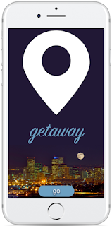
Getaway Travel App
1. BACKGROUND:
Getaway is a travel app where the user is given a personalized itinerary to get the most out of their trip.2. INTRODUCTION:
The following app was developed for a user experience bootcamp that I participated in at General Assembly. The design decisions and assumptions are solely based on publicy available information.3. TEAM:
Pamela Yuhas4. RESEARCH / EMPATHIZE WITH OTHERS:
The task was to interview two classmates. I was to ask either about a trip they loved so much they would repeat it or the worst trip they've been on. I asked questions about who they were on the trip with, what the purpose of the trip was, what they liked/disliked about the surroundings, what activities they did, if they had any memorable moments during the trip, what the weather was like, etc. I paid special attention to any emotions mentioned. 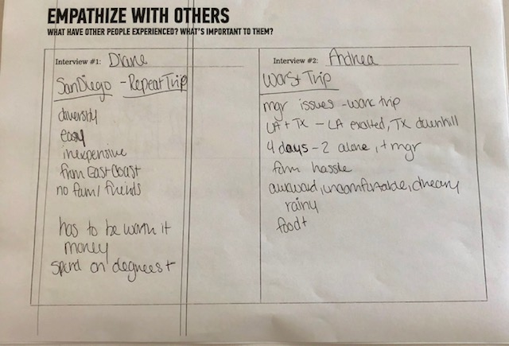5. USER STORIES / PERSONAS:
I formed the two interviews into general personas. This helped give me a clearer picture of the different types of people this app could benefit. Identifying different needs and goals was an integral part of making the app applicable to a larger audience. 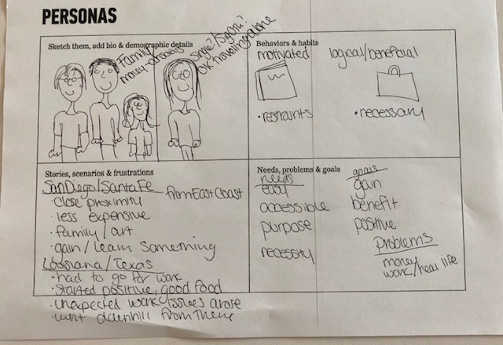6. REEVALUATE / DISTILL YOUR FINDINGS:
It's important to remember what the main problems or issues are. I took a step back to reassess what the user's main motivators may be and what problem they need to overcome. 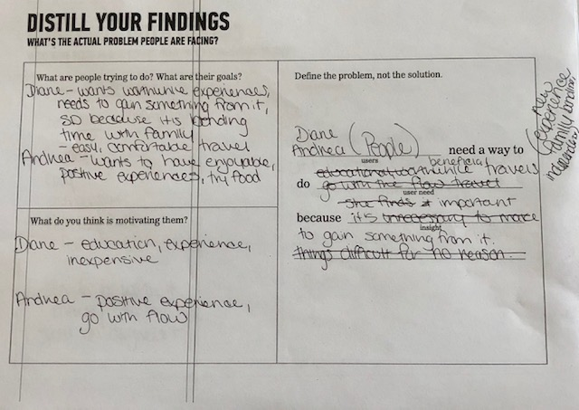7. SKETCH / ORGANIZE:
I mapped out the user flow to help visualize the possible click routes the user could take. 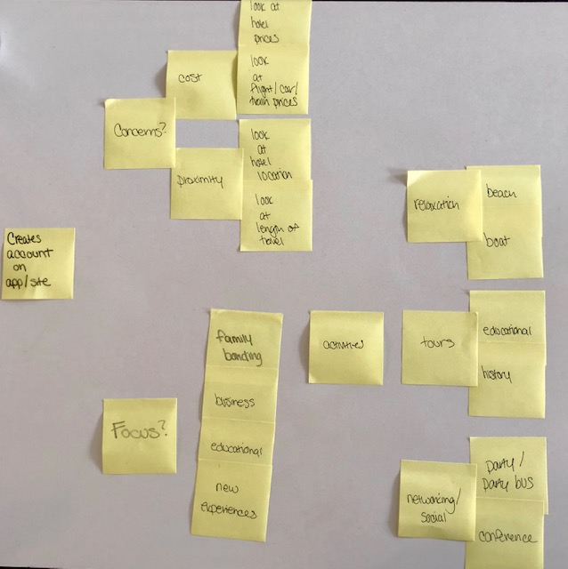8. LO-FI WIREFRAME:
After doing a quick sketch of the possible layout, I used Marvel to help visualize what the app could potentially look like.
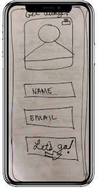
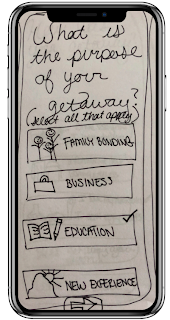
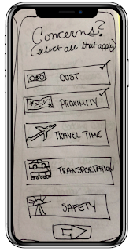
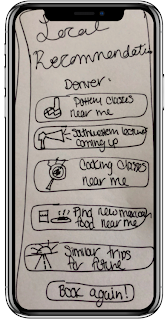
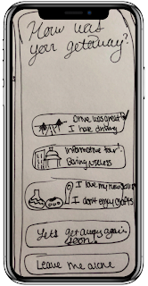
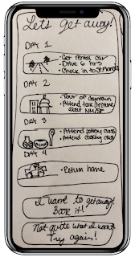
9. HI-FI WIREFRAME:
I then created a simple hi-fi mock-up to bring my vision to the next level.
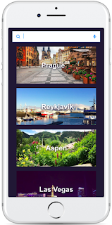
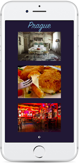
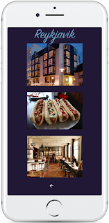